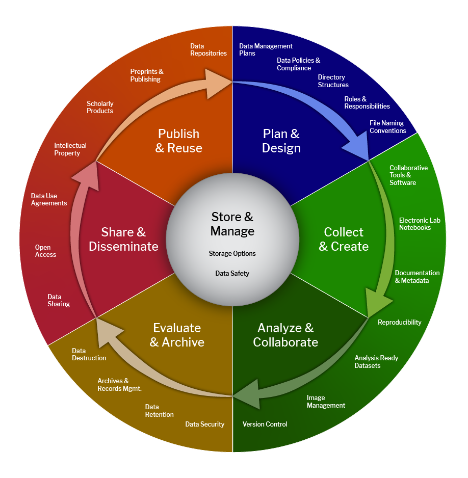

Guide 1: Understanding the Data Lifecycle
Introduction
The term data management can mean different things to different people depending on their role and responsibilities. From an organizational perspective, however, these varied functions are interconnected and form a continuous, repeating workflow known as the data management lifecycle. While organizations and institutions may define the lifecycle differently, most frameworks share a common set of stages that guide data from planning and collection through analysis, preservation, and reuse.
The lifecycle presented here builds on concepts developed by the U.S. Geological Survey (USGS) and the Harvard Business School. For readers interested in a more detailed and research-focused framework, we also recommend reviewing the Harvard Biomedical Data Lifecycle, shown here:

Step 1- Plan
Before starting any project, it's important to take time to think through your data workflow and plan how your data will be managed throughout the project's lifecycle. Planning data workflows in advance can help prevent mistakes, save time and resources, and reduce unnecessary challenges.
A best practice is to document these plans in a living document that is shared with all members of your team. The NZCBI data community plans to develop more specific guidance on this topic in the future. In the meantime, we recommend reviewing this USGS resource page for more information.
Step 2- Generation
From direct field observations and expanding networks of remote sensors to cutting-edge laboratory recordings, NZCBI researchers routinely generate the raw data that underpin downstream analyses. Because we collect much of these data ourselves, our teams have direct control over key aspects of data generation, including:
- Measurement unit
- Resolution
- Recording frequency*
- File format
This level of control makes it essential to design survey and observation protocols with downstream applications in mind. Decisions made during data collection can affect not only the success of the current project but also the future value and reusability of the data for other research efforts.
Researchers also control the metadata that accompany primary observations. This contextual information can be just as important as the observations themselves, helping others understand, interpret, and reuse the data. As a result, metadata should be planned and documented with the same level of care given to primary data collection.
One of the key topics discussed during the initial Data Technology Workshop was the development of unit-wide metadata standards. As those standards and supporting materials are developed, updates will be shared with the broader team.
*Depending on the capabilities and configuration of the observation instrument, it may be necessary to distinguish between observing and collecting data. In some cases, data may be recorded initially but filtered or discarded before being stored for downstream use.
Step 3- Acquire
Not all data used by NZCBI teams are generated in-house. Many projects rely on datasets acquired from external sources, including:
- Publicly available datasets
- Data provided by established partners
- Data requested from restricted or controlled-access sources
Each of these sources may have specific access restrictions, terms of use, licensing conditions, and citation requirements that must be documented and followed. These requirements apply not only to the original project but also to any future use of the dataset or its derivatives, particularly if they are stored on Smithsonian servers for long-term access and reuse.
When evaluating datasets for acquisition, it is important to assess how the data were collected and documented. Data collection methods, measurement parameters, and metadata quality should be reviewed to ensure they are compatible with the standards and considerations outlined in Step 2. Doing so helps determine whether a dataset is appropriate for its intended use and supports future integration with other data resources.
For datasets that are not publicly available, data providers often require a data-sharing agreement before access can be granted. Because these agreements can have legal and institutional implications, they should be reviewed and approved by the Smithsonian's legal team prior to signing. Be sure to account for this review process when planning project timelines, as obtaining approval may require additional lead time.
Step 4 – Storage
Data storage begins as soon as it arrives on SI computers and continues through to identifying an appropriate archival location. Teams should also ensure accurate and secure transfer of data between location. This step can also include some processing actions like data compression and data encryption for efficient and secure storage.
Important considerations here include:
- file name nomenclature
- folder organization
- storage cost
- security/accessibility (including appropriate user levels for sensitive data)
- back up redundancy (while also avoiding unstructured file duplication)
More details on this step can be found in our Data Management Guide
Step 5 -Processing
Regardless of where data originate, NZCBI teams will routinely need to prepare and manipulate datasets for downstream analysis and use. Common data processing activities include:
- Cleaning
- Formatting
- Validating
- Summarizing
- Transforming
- Integrating
- Subsetting
These activities can have a significant impact on how data are interpreted and reused. As a result, all processing steps should be documented carefully and consistently. Documentation is important not only for the immediate project but also for any future use of the dataset or its derivatives if they are stored on Smithsonian Institution (SI) systems.
The level of documentation required will vary by project. Some datasets undergo a single processing workflow and can be adequately described through static documentation that records the methods used. Other datasets are updated or maintained over time and require a more dynamic approach to documentation. In these cases, change logs or version histories should be maintained to record what changes were made, when they occurred, and who made them.
Well-documented processing workflows improve transparency, reproducibility, and the long-term value of data assets by ensuring that future users can understand how datasets evolved from their original form.
Step 6-Analysis
With data acquired, organized, and prepared, teams can begin addressing their research questions through analysis and visualization. This stage includes any movement of data from storage locations to the platforms where analyses will be conducted, whether that is a local workstation, a Smithsonian-managed resource such as Hydra, or an external cloud platform such as Google Earth Engine.
Because data may be copied or moved between multiple environments during analysis, it is important to maintain clear records of where files are stored, how they are transferred, and which versions are used. Proper tracking helps ensure reproducibility and reduces the risk of confusion when analyses are revisited or expanded in the future.
Analytical workflows also generate new data products, including model outputs, derived datasets, summaries, and results files. These products should be documented with the same level of care as primary data. Metadata should capture information such as data sources, processing steps, model parameters, software versions, and computing environments. Resulting datasets should also follow the storage and archival planning considerations described in Step 4.
Data visualization activities are also part of this stage. Whether creating figures, maps, dashboards, or other visual products, teams should maintain clear records of the data, analyses, and software used to generate each output. Visualization products should be stored in an organized manner alongside the documentation needed to understand and reproduce them.
Careful documentation of analyses and visualizations improves transparency, reproducibility, and the long-term value of research outputs by ensuring that both results and the processes used to generate them can be understood and revisited in the future.
Step 7 – Interpret
This step focuses on communicating the meaning and significance of data and analysis outputs. For the NZCBI community, the most common form of interpretation is the publication of scientific journal articles. These publications should clearly describe the key aspects of data creation, acquisition (including appropriate citations), processing, and analysis so that readers can understand and evaluate the research and, where possible, reproduce the results.
Other interpretive products, such as public presentations, fact sheets, reports, and educational materials, often do not require the same level of methodological detail within the final product itself. However, the files used to create these products should still be managed and documented carefully. As with figures and other analytical outputs, these materials should be stored in an organized manner and accompanied by records that identify the data sources, analyses, and supporting materials used in their development.
Web-based communication platforms require additional planning. Tools such as ESRI StoryMaps and R Shiny applications typically rely on data that must remain accessible to the application after it is published. As a result, datasets and supporting files may need to be stored in locations that are separate from the primary archival repository while still maintaining appropriate documentation, security controls, and long-term management plans.
Thoughtful documentation and organization at this stage help ensure that interpretive products remain transparent, maintainable, and connected to the underlying data and analyses from which they were derived.
Step 8- Share
This step focuses on the direct sharing of data without accompanying interpretation or analysis. Effective data sharing requires planning to ensure that datasets are discoverable, accessible, appropriately documented, and reusable by others.
Key considerations include:
- Selecting the platform or repository through which the data will be shared
- Applying descriptive metadata and tags to improve discoverability
- Defining data use terms, licenses, or other usage restrictions
- Establishing a persistent identifier or other citation mechanism
- Setting access controls for sensitive data, including processes for requesting access when appropriate
These decisions help ensure that shared data can be found, understood, cited, and used appropriately by future researchers and stakeholders.
In some cases, datasets cannot be made fully public because of legal, ethical, institutional, or sensitivity considerations. When sharing data under restricted access, teams may wish to establish data-sharing agreements that define the conditions under which data can be accessed and used. As with agreements provided by external organizations, the development of Smithsonian-specific data-sharing agreements should be done in consultation with SI legal staff.
The need for data-sharing guidance and standardized agreement templates was identified as a key priority during the initial Data Technology Workshops. As these resources are developed, templates, examples, and best-practice guidance will be made available to support future data-sharing efforts.
Thoughtful planning at this stage helps maximize the impact and reuse of research data while ensuring that institutional requirements, data provider obligations, and sensitivity considerations are appropriately addressed.
Conclusion
Once shared, a dataset can enter the data lifecycle again. Other teams may acquire it, process it for their own needs, and use it to answer new research questions. Their work may generate new datasets and outputs that are subsequently shared, enabling the cycle of data creation, use, and reuse to continue indefinitely.